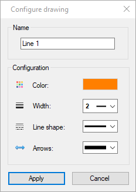
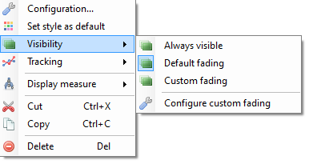
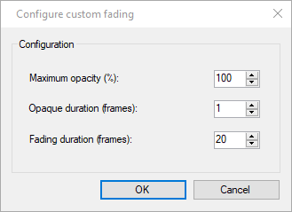

Style and opacity of drawings¶
Style¶
Drawings have styling properties like color, size of text or type of line. The exact set of properties depends on the tool.
New drawings use the default style configured for this type of drawing. The default style can be changed in two ways:
Open the color profile by clicking the color profile button or right clicking the viewport while the corresponding tool is active.
Right click an existing drawing and use the menu .
To change the style of a drawing after it is created right click it and select the menu. This dialog also lets you change the name identifying the drawing.
Certain tools that are presented as separate entries in the tool bar are actually style variants of each other. For example the presence of arrows at the end of lines is merely a style option. This means it is possible to convert a line into an arrow by changing the arrow style option.
Visibility¶
Drawings have visibility properties that controls their opacity throughout the video.
New drawings start with the default opacity options set in . Each drawing can then be configured to use different visibility options.
In general terms drawings have a fade-in ramp, an opaque section and a fade-out ramp. The default options make drawings fully visible on their key image and fade in and out of the neighboring frames. When drawings are tracked they stay opaque during the section of video where they are tracked.

Always visible¶
With this option the drawing is visible for the entirety of the video. The opaque duration and fading duration options are ignored.
Warning
The drawing is still attached to the key image it was added to and will be deleted if that key image is deleted.
Default fading¶
With this option the drawing uses the default opacity configuration set in .
Custom fading¶
With this option the drawing uses a custom configuration defined through the Configure custom fading dialog.
Maximum opacity (%)
This option controls the opacity used during the opaque section. A value of 100 % means the drawing will not let the background show through. A value less than 100 % means the drawing will be somewhat transparent.
Opaque duration (frames)
This option controls how long the drawing stays at its maximum opacity level before fading out. This section starts at the keyframe onto which the drawing was added.
Fading duration (frames)
This option controls the duration of the ramps before and after the maximum opacity until the drawing becomes completely invisible.